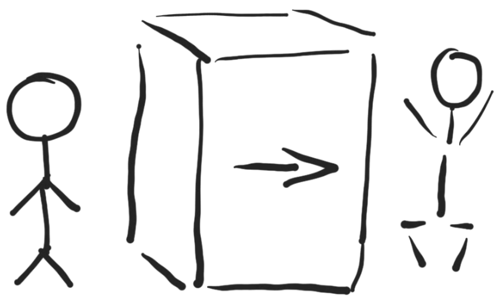

O czym jest ta książka
Co nowego możemy dowiedzieć się o naszych zachodnich sąsiadach poza tym co wiemy z mediów i historii w szkołach?
Autor zachęca do wyruszenia w podróż po jego ostatnich 7 lat życia i razem z nim przeżycia jeszcze raz tego co nie tylko jest nadal aktualne, ale co sprawia, że tak ciekawe mogą być relacje z krajem, który tak bardzo potrzebuje obcokrajowców do budowania największej europejskiej gospodarki.
Czy warto zdecydować się na zmianę wszystkiego?
- kultury
- języka
- obowiązujących przepisów prawa
- pracy
Mam nadzieję, że te wątpliwości zostaną ostatecznie rozwiane w oparciu o informacje zawarte w tej książce.
Cel napisania:
Celem książki nie było wchodzenie w techniczne zagadnienia, a bardziej kulturowe, społeczne, podatkowe, gdyż to one decydują o tym czy się zostaje na dłużej w danym kraju. Istotne są też obecne warunki życia, komfort. Uznałem, że dla każdego kto wyjeżdża za granicę, zwłaszcza samotnie, istotne jest by przez pierwsze tygodnie mieć jasny obraz sytuacji i wiedzieć czego się spodziewać, jakie są normy i co nie mieści się w jej granicach.
Kontekst
To prawda, że już wiele książek napisano, ale ta jest jedyna w kontekście aktualnych zmian i ewentualnego wyjazdu w roku 2020. Przytoczone wywiady i statystyki, pozwalają na podjęcie decyzji w oparciu o rzetelne i aktualne dane.
treść książki osadzona jest w określonym ograniczonym kontekście: + branża IT + rynek pracy w niemczech + przeprowadzka lub/i przekwalifikowanie się + ograniczenia temu towarzyszące
doświadczenia, historie
zebrane doświadczenia kilku ludzi i podsumowanie wniosków z tego wynikających język przystęny, prowadzący do wyjaśnienia kilku stereotypów dotykająccyh obu stron (rzeki) Odry.
o kulturze pracy
Róznice w zarobkach nie są już tak znaczące czy to Białoruś, czy Polska, Niemcy ale kultura tak szybko się nie zmienia i o tych różnicach jest tutaj troche napisane, nie tylko z punktu widzenia Polaka jadącego do Niemiec, ale też Polaka, który się tam wychował i Niemców, którzy jedynie współpracowali z Polakami Nauka programowania to tylko techniczna strona, jest jeszcze wiele elementw majacych wplyw na kariere. W tej ksiazce sa te wszystkie poza technicnze detale omowione z perspektywy ludzi ktorzy przesli te droge i moga z dystansem opowiedziece o swoich doswiadczeniach dzielac sie unikalnym doswiadczeniem i wedza.
O czym nie jest
Obecnie w dobie otwartych mediów trudno nie powielić w różnych formach tego samego tematu, dlatego tym bardziej warto sięgać do książek opisujących wąsko pewne zagadnienia a przy tym kompleksowo je omawiając inaczej niż w przypadku artykułów, czy opinii, które zawierają wyrywkowe spojrzenie na pewne fakty.
dla kogo jest
w pierwszej kolejności dla programistów zainteresowanych emigracją do krajów niemieckojęzycznych. W drugiej dla Polaków, którzy chcą się upewnić, że nie chcą emigrować, chcą świadomie podjąć decyzję. W trzeciej dla tych, którzy jeszcze nie są programistami a mają wątpliwości, nawet jeśli nie wyjadą po lekturze tej książki, to mogą poprzez zawarte w książce informacje zwiększyć świadomość na temat rynku pracy i własnej wartości na nim. Ta ksiazka jest napisana dla tych, ktorzy zajmuja sie lub chca zajmowac profesjonalnie programowaniem.
Dla tych, którzy są programistami, ale myślą o przekwalifikowaniu np webdev do programisty desktop, itp
dla kogo nie jest
... chętnie się dowiemy, czekamy na recenzje tych, którym nie podoba się ta książka :)
dla szukających motywacji do wyjazdu, nie chcelibyśmy kogoś przekonywać, bo ja od 6 lat nikogo nie przekonałem mimo, że wypowiadałem się raczej pozytywnie. ja sam bym siebie nie przekonał do pozostania w Polsce na stałe, więc nie chciałbym nikogo przenywać do wyjazdu, zmiana przekonań nie jest celem tej książki.
o kim jest ta książka
o ludziach, którzy nie bali się zaryzykować i stale podnoszą swoje kwalifikacje, za które otrzymują dobre wynagrodzenie Którzy zastanawiają się co mogliby zrobić lepiej.
o kim nie jest
o gwiazdach Youtuba, celebrytach internetowych, sławach naszych czasów
Streszczenie
Książka opisuje co to jest IT, jakie perspektywy
Rozdziały
Zakres tematyczny jest na zmianę w każdym kolejnym rozdziale o technicznych kwestiach związanych z zawodem i kwestiach społeczno, organizacyjnych, prawnych.
- zawód programista
- kompetencje
- kariera
- narzędzia
Ksiazka zostala podzielona na czesci w zaleznosci od tego na jakim etapie jestes i dokad zmierzasz.
Mim celem jest stworzenie mapy mozliwosci z drogowskazami dla ludzi ktorzy chca rozeznac czego tak na prawde szukaja i zadaja sobie pytania jak tam dotrzec.
-
Napisales juz kilka programow i chcialbys rozwijac te zdolnosci ale nie wiesz czy masz szanse na rynku niemieckim, bo znasz angielski
-
Znasz jezyk niemiecki, kulture ale nie znasz sie na programowaniu:
- moje narzedzia + nodejs + python + firma szukajaca junirorow
glownie webdevelopment i web app, bo na to jest zapotrzebowanie, uzycie gotowych narzedzi + wizualna apicra i apiunit od razu wejscie na pole wysokiej produktywnosci
-
Znasz sie na programowaniu, bo robisz to od wielu lat, szukasz nowych wyzwań, znasz angielski, być może niemiecki i kulturę niemiecką ale chcialbyś poznać jak najefektywniej bez marnowania energii i czasu na niepotrzebne dziaania dotrzec do pracodawcy niemieckiego i tam dalej rozwijac swoje umiejetnosci.
-
jestes w niemczech, czyli znasz niemiecki, angielski, polski, ... i myslisz o zmianie zawodu ale obawiasz sie ze nie jest to proste i chcialbys sie upewnic ze to wlasciwa decyzja i okreslic jak to zrobic najefektywniej i bezpolesnie dla zycia prywatnego.
-
Potrzebujesz wiecej niz jest zawarte w tej ksiazce a nie chcesz czekac do nastepnego wydania: kontakt ze mna w celu otrzymania wskazowek pozwalajacych od razu na realizacje, usluga platna ale spersonalizowana z gwarancja zwrotu w razie niezadowolenia w ciagu 2 tygodni.
support dla niecierpliwych na dluzej jesli jest taka potrzeba
- W zasadzie nie musisz czytac tej ksiazki bo nie masz zadnych pytan, zapraszamy do napisania kolejnej czesci, wzbogaconej o wiecej detali i aktualnych zagadnien z branzy. Jesli moglbys zaoferowac pomoc tym, ktorzy pracy poszukuja a lbo juz to robisz to zapraszamy
O autorze
Umysł ścisły z otwartą głową.
w przeszłości:
z wykształcenia: + elektryk, energoelektryk, inż. systemów sterowania
- elektryk
- elektronik
- automatyk
- handlowiec
- przedsiębiorca
- programista
Obecnie:
jestem pisarzem, programistą.
- pisze książkę
- tworzę oprogramowanie opensource
głównie narzędzia do pracy, ułatwiam sobie pracę.
W momencie pisania książki pracuję na etacie rodzica. tutaj więcej szczegółów: rodzina.md
Czas w którym nie pracuję na etacie programisty okazuje się owocnym czasem na podsumowania. Pisanie tekstu, czy algorytmu to dla mnie równa przyjemność, chociaż zawodowo lepiej odnajduję się w programowaniu.
Cieszę się, że mogę podzielić się z w tej publikacji moim doświadczeniem. Tej książki by nie było, gdyby nie moje ponad 30 letnie doświadczenie z kulturą Polską, gdzie miałem plany pozostać, ale plany można zmienić, więc zaryzykowałem.
Rok 2008, Wrzesień
Wcześniej również zaryzykowałem i zmieniłem branżę i profesję na programistę. Ale nie wszystkie zmiany były tak owocne, chociażby działanie na własny rachunek w 2008 roku i to we wrześniu, kiedy już mówiono o kryzysie w USA. Mimo, że kryzys czy kilkuletni zastój gospdarczy w Polsce nie był tak dotkliwy, to dla młodej niedoświadczonej osoby była to droga nie do przejścia.
Podjąłem już nie decyzję, ale konieczność, jaką było zamknięcie działalności i dalsza praca ale już w zawodzie programisty a nie jako elektryk-automatyk, marzenia powoli nabierały kształtów.
Rok 2011, Sierpień
Pierwsza podjęta praca w tym zawodzie pozwoliła mi nabrać praktyki, obycia, poznanie warsztatu najlepszych! Tak mogę dziś powiedzieć z perspektywuy czasu, byłem zbyt powolny, zbyt mało obyty by w tamtej firmie być dłużej niż 6 miesięcy. Ale radość była już z pierwszych poczynionych kroków, ryzyko się opłaciło, wcześniejsze straty finansowe jeszcze długo będzie trzeba spłacać, ale jest już rozwiązanie.
Rok 2012, Listopad
Koniec roku 2012 to początek nowej drogi w karierze i życiu. Wyjazd na próbne 5 dni pracy, spotkania, testy, rozmowy. Udało się, mam to, pod koniec stycznia 2013 jestem na Bawarii (z powrotem). W małej firmie rozpoczynam swoją nową drogę o której szerzej piszę w tej książce.
Rok 2014
- nauka języka java
- wyjazd do NRW
- ukończenie studiów inżynierskich
Rok 2015
- praca w korporacji jako programista, oficjalnie (consultant)
- ponad 20 tysięcy pracowników, telefon, laptop, wyjazdy
- nauka nodejs
- kontakt do nowej firmy i po namowowie chętnie przyłączyłem się do zespołu Mehrkanal w 2016 roku.
Rok 2016
- kolejne pół roku już jako pracownik, mogłoby być dłużej, gdyby nie życie prywatne, kolejne marzenia zrealizowane, dalej już tylko lepiej, kto by się spodziewał? Moja historia pokazuje, że w Niemczech można zaplanować karierę, ale rónież zrealizować wiele planów prywatnych a nawet zdrowotnych: zdrowie.md
Plany, scenariusze a życie
Wielokrotnie przekonałem się, że moje oczekiwania, plany i scenariusze nie pokryły się z rzeczywistością, ale nigdy nie pomyślałem, że to zbędne, gdyż poznawanie rzeczywistości poprzez własne doświadczenie daje szansę na lepsze zrozumienie i poprawienie w przyszłości swoich szacunków.
Nauka nie pójdzie w las gdy ją zatrzymamy w domu swojej świadomości, roztaczając wokół niej aurę zrozumienia. Zrozumienie a nie akceptacja daje szansę na poprawę własnej i bliskiej nam rzeczywistości. Inaczej stajemy się maszyną bez refleksji, która w koło popełnia te same błędy.
książka
Książki nie pisze się w krótkim czasie, bo abstrahując od samego procesu pisania, potrzebny jest wzięcie oddechu pomiędzy kolejnymi etapami powstawania, aby z perspektywy ocenić i móc stworzyć coś więcej niż tylko zlepek liter i zdań.
Daję sobie czas na przemyślenia i konsultacje
kulisy powstania i motywacje przy pisaniu książki:
Dlaczego powstała ta książka
Motywacja od przekazania graniczy z determinajacją, by nie tylko pisać teksty dla komputera ale również dla człowieka.
W ramach myśli wymiany oprgoramowania: open-source tworzyć rónież wymianę doświadczeń open - experience
Jak długo była pisana
Przez kilka tygodni w wolnym czasie pomiędzy wychowaniem dziecka. Trzeba jednak założyć fakt, że wcześniej przygotowywałem kilka myśli i analiz, które przyczyniły się do mentalnej dojrzałości. Gdyż sam fakt postanowienia napisania to była chwila
Bohaterowie
Bohaterami książki są:
Szablon opisu:
charketrystka, czym się zajmuje się obecnie
historia, czym zajmowałem się w cześniej
początek, jak zaczałem programować
początek w de
ew. koniec w DE
Marzenia, plany kontra rzeczywistość
Strony w procesie poszukiwania i walki o pracę
-
kandydaci na stanowiska
-
firmy rekrutujące cf,
-
pracodawcy
- ktos z taxi, mehr, inno, check, buch, waw
Rola każdej ze stron
na jakie kompromisy pójdzie polski pracodawca a na jakie niemiecki gdzie leży punkt ciężkości, na co się zgodzi a na co już nie
Analiza obecnej sytuacji
Przeszłośc i przyszłość co z tego wynika
Przeszłość programowania
zacznę od dygresji: To zadziwiające, że wyrazy przeszłość i przyszłość różnią się w polskim języku tylko jedną literą - samogłoską, ciekawe dlaczego?
Czyżby w tym była zawarta mądrość? że przeszłość i przyszłość różnią się pozornie znacznie, ale w praktyce są łatwe do przewidzenia, gdyż natura ludzka, która kształtuje teraźniejszość nie zmienia się?
język polski:
- przyszłość
- przeszłosć
język niemiecki:
- die Zukunft
- die Vergangenheit
język angielski:
- future
- past
Jak było dotychcczas
Jak rozwijaja się technologie
Jak to ma wpływ na karierę
POlityczne zmiany
Kulturowe zmiany
Przyszłość programowania
Jak było dotychcczas
Jak rozwijaja się technologie
Jak to ma wpływ na karierę
POlityczne zmiany
Kulturowe zmiany
Jezyki programowani
pod kątem obecnego zapotrzebowania
obecnego użycia
jakie są trendy,
czy warto zmienić
DevOps
administracyjna strona programowania
Jakie zadania + administracja środowiskiem +
Open Source
Open mind Code Review
Specjalizacje
jakie powstały zawody w ostatnich latach jakie są perspektywy techniczne i społeczne
Kim jest programista
programowanie to tylko efekt końcowy, całość to: Software Development, W niemczech używa się często Software Developer zamiennie z Softwareentwickler
Język angielski
W ogóle słowa angielskie są bardziej popularne i są chętnie wplatane w mowie i w piśmie. Jak w mowie to też często z akcentem angielskim.
Przeszłość
początki powstania tego zawodu
Przyszłosć
jakie są teoretyczne podstawy do istnienia tego zawodu i jakie są możliwe scenariusze na najbliższe lata i naście lat.
Jak zmienia się zawód programisty
-
kodowanie, inżynieria, implementacja modeli matematycznych
-
software development, administracja, łączenie różnych środowisk, integracja
-
Api, IoT, robotyzacja, automatyzacja
-
...
coder, programista, software developer, devops
Administrator
jaka jest jego rola
Kultura pracy
w celu przybliżenia tego czym jest kultura i jak ulegała zmianie w polsce oraz jak przebiegała w niemczech weźmy dla przykładu najpierw to co znamy czyli zmiany, które dokonały się w Polsce przybliżenie historycznych względów
Cco to jest kultura
Polska
to społeczeństwo, którego kraj czasem nie istniał na mapie, czasem był pod okupacją, ale rzadko liderem, chęć przetrwania i łatwość adaptacji do zmian charakteryzuje część społeczeństwa
rok 1989
rozrywka:
rok 2009
rozrywka:
rok 2019
rozrywka:
Niemcy
to społeczeństwo, które wiele razy było liderem
rok 1989
rozrywka:
rok 2009
rozrywka:
rok 2019
rozrywka:
Historia
ten rozdział powstał, by pokazać, jakie znaczenie ma dla Polaków i Niemców historia.
Wspólna historia jest bolesna, a wiele spraw jest tematem tabu w niemczech w odróżnieniu od Polski
Warto to znać podejmując te tematy w Niemczech. Spotkałem się z kilkoma odpowiedziami dającymi do myślenia:
w pracy podczas pogawędki z ponad 50 letnim niemieckim kolegą:
- gdyby niemcy nie byli liderami w europie to kto, to po prostu ich obowiązek
Podczas wymiany komentarzy na social media:
- to była przeszłość, my jako niemcy nie odpowiadamy za to co stało się wcześniej
i tak myślą, to część kultury, myślenia kom
Kultura pracy
Jak wygląda dzień pracy
Rozpoczęcie
Punktualność ramy czasowe przywitanie, formalizm, formy grzecznościowe
Przerwa w pracy
czas trwania o czym się mówi, o czym się nie mówi palenie papierosów alkohol
wyjścia na zewnątrz kantyny karnety na bufety, wyjście do restuaracji
Co jest ważne
Praca zdalna to rzadkość
Automatyzacja
o ile motoryzacja jest bardzo dobrze rozwinięta są fabryki robotów takich jak kuka (warto obejrzeć reklamy).
ale programowanie jest daleko w tyle i można liczyć jedynie na programistów z zagranicy, aby usprawniali to czego nie potrafią programiści z niemiec.
Przykład niskiego poziomu zaawansowania w branzy IT
Kiedy pierwszy raz podjąłem pracę etatową to już w polsce w firmie If Research Polacy mieli dobrze rozbudowane środowisko DevOps kiedy to jeszcze nie było popularne.
Każdy mógł swobodnie wybrać system na którym chciał pracować a wirtualne lokalne środowisko działało na linuxie.
Dziękli temu korzystaliśmy z bardzo wydajnego środowiska.
języki
Stereotypy
takie, które są już częścieni nie aktualne w praktyce, ale rzadko można się spotkać z pewnym fałszywym przekonaniem
o polakach
o niemcach
indywidualizm
poniewąż można dużo o tym napisać i nie do końca uchwycić sens warto przytoczyć synonimy i antonimy słowa indywidualizm w formie osobowej, aby bardziej przemawiały do wyobraźni
Synonimy
charakterystyczny, osobniczy, podręcznikowy, reprezentacyjny, reprezentatywny, rozpoznawalny, rozpoznawczy, specyficzny, stylowy, swoisty, symptomatyczny, szczególny, typowy, właściwy, znamienny, jednostkowy, niepowtarzalny, odrębny, oryginalny, osobliwy, specjalny, swego rodzaju, unikalny, unikatowy, niepołączony, oddalony, oddzielny, oddzielony, oderwany, odizolowany, odległy, odosobniony, odseparowany, osobny, poszczególny, rozłączny, wydzielony, wyodrębniony, absolutny, autogeniczny, autogenny, autonomiczny, niezależny, sam przez się, samoistny, samorzutny, jednoosobowy, niezorganizowany, pojedynczy, samodzielny, imienny, niezespołowy, solowy, jednostronny, nieobiektywny, osobisty, podmiotowy, stronniczy, subiektywny, niezłączony, rozdzielny, autobiograficzny, odręczny, personalny, prywatny, swój, własnoręczny, własny, rodzimy, wyłączny, odróżniający, wyjątkowy, inny, odmienny, niestowarzyszony, intymny, niepubliczny, partykularny, własnościowy, wyłączony, zastrzeżony, spersonalizowany,
Antonimy do słowa „indywidualny”
nieindywidualny, obywatelski, ogólnonarodowy, ogólny, państwowy, publiczny, spółdzielczy, uspołeczniony, generalny, grupowy, kolegialny, kolektywny, wspólny, zbiorowy, chóralny, zespołowy, rutynowy, stały, umówiony, ustalony, utrwalony, łączny, połączony, zespolony, nieosobisty, obiektywny, społeczny, banalny, cudzy, normalny, powszechny, przeciętny, stowarzyszony,
Praktyka
W kontekście społeczeństwa indywidualizm sprowadza sie do wykluczenia, dlatego tak bardzo niemcy wypracowują system, by w nim mógł istnieć indywidualizm zdefiniowany nie odchodzący od normy
kolektywizm
poniewąż można dużo o tym napisać i nie do końca uchwycić sens warto przytoczyć synonimy i antonimy słowa indywidualizm w formie osobowej, aby bardziej przemawiały do wyobraźni
Synonimy
Antonimy do słowa „indywidualny”
Praktyka
W kontekście społeczeństwa indywidualizm sprowadza sie do wykluczenia, dlatego tak bardzo niemcy wypracowują system, by w nim mógł istnieć indywidualizm zdefiniowany nie odchodzący od normy
Market
rynek pracy w niemczech
- ile jest nie obsadzonych jakiego typu profesje w IT sa najbardziej pozadane:
- teamleader
- programista
- manager
jakie specjalizacje, jezyki, frameworki: + php + zend + symfony + laravel
Ile ofert pracy rocznie:
cytaty z raportow polskich i niemieckich.
Asymiliacja
Kultura Polska i Polacy zaskakują najbardziej i najwiękej o nich możńa się nauczyć przebywając poza granicami kraju gdyż Polska jest krajem monoetnicznym i pewne standardy są oczywiste co zmienia sie za granicą, gdzie nie tylko jest inna kulrtura ale tez często mulitkulutorowść
Polaczy się asymilują
t
zdrowie
nawiązanie do pogody
Pogoda
nawiązanie do zdrowia
Wyprawa
Rozmowa kwalifikacyjna, Interview
Wyjazd do pracy
Warto na początku zaznaczyć, że to nie jest droga w jedną stronę, gdybym miał wybierać, to nie byłbym tak szczęśliwy jak jestem, gdyż dużo mi daje urlop w Polsce, ale nie chciałbym tam żyć. Z drugiej strony, gdybym był zmuszony żyć tylko w Niemczech to też nie byłbym szczęśliwy.
Warto mieć na uwadze, że robimy to po to by zdobyć : + nowe doświadczenie + znajomość o kulturze pracy w innym kraju + nauka języków: niemiecki, angielski, ...
Te atuty dadzą pozytywny owoce za kilka lat, nawet gdy wrócimy do Polski, lub wyjedziemy do kolejnego kraju.
Każda wyprawa wymaga przygotowania, to co warto zaplanować przed wyjazdem to:
-
naprawa zdrowia
- wizyta u polskich lekarzy specjalistów
- stomatolog, ...
- wizyta u polskich lekarzy specjalistów
-
naprawa samochodu
-
zakupy
- artykuły niedostępne lub w ograniczonej ilośći w niemczech lub w zawyżonej cenie
- zioła, herbaty ziołowe, yerba mate
- artykuły niedostępne lub w ograniczonej ilośći w niemczech lub w zawyżonej cenie
Na jaki czas?
na kilka tygodni, miesięcy
Ubezpieczenie prawne
Rechtsschutzversicherung
- das Recht = prawo
- der Schutz = ochrona
- die Versicherung = ubezpieczenie
Motywacja

W motywacji do wszelkiej aktywności warto znać fakty, by pozbyć sie złudzeniom prowadzących do krótkotrwałych uniesień i braku konsekwencji.
Determinacja
jednak większe znaczenie od motywacji ma determinacja, która nie pozwala myśleć o przyszłych decyzjach jako opcji i uzaleeżniać je od dobrego humoru.
tylko jest koniecznością na poziomie mentalnym, gdyż wiemy, że: + nikt za mnie tego nie zrobi + nie mam innej możliwości + czas gra na moją niekorzyść + jeśli nie zrobię, to będzie tylko gorzej
W warunkach determinacji powstają firmy, tworzy się lepszy świat w oparciu o trzeźwe nastawienie do rzeczywistości i chęć włożenia wysiłku w zmianę obecnej sytuacji, wiara w to, że tylko od włożonego w dzieło wysłku zależy efekt.
Determinacja towarzyszy często w niesprzyjajacych warunkach, gdy nie ma sie czasu na długie przemyślenia, jednak ma sie jasny obraz tego czego się oczekuje.
Kim jest programista od strony technicznej
Ktoś kto jest programistą, jest zarazem pisarzem, gdyż używa klawiatury do zapisywania logicznych zdań. Zdania te trzeba wymyśleć a potem przemyśleć, sprawdzić i wziąć odpowiedzialność za efekty ich działania.
Brzmi strasznie, ale dla tych, którzy lubią programować, to jedynie rezultat.
Moje motywacje
+ chęć tworznie i zobaczenia rezultatów i dalszej zmiany w celu stworzenia lepszej wersji tego co jest obecnie
+ modelowanie rzeczywistości, zabawa w boga, tworzenie lepszego świata
+ wcześniej w elektronice, ale programowanie daje szybsze rezultaty
Pytania na które warto sobie odpowiedzieć:
- Dlaczego zajmuję się prgoramowaniem, skąd mam taką potrzebę?
- Jakie inne aktywności zarobkowe są dla mnie równie interesujące, tzn dające podobną satysfakcję?
Kompetencje
 o tym co widać a czego nie widać
o tym co widać a czego nie widać
Co pokazać a o czym nie mówić?
Umiejętności
Pożądane profile osób na rynku
Cechy charakteru
Perfekcjonizm
problemy z zakończeniem czegoś, wedle zasady, lepsze działające niż perfekcyjne
Języki obce
jak bardzo są istotne i kiedy nie mają większego znaczenia. Oczywiśćie jezyk angielski jako pierwszy podsatwowy język do komunikacji w różnych warunkach.
Nauka języków obcych
możliwe jest uczestniczenie w VHS = Volkshohschule ale możliwe
Koszty życia
na jakie koszty życia trzeba być przygotowanym
Gdzie robić zakupy aby nie tracić czasu i pieniędzy portale online ebay, amazon, etc
Na czym można oszczędzić, na czym nie powinno się oszczędzać
Markety
W niemczech jest 80 milionów ludzi, większość to klienci niemieckich sklepów, reszta, mniejszości narodowe, stanowiące : ...
Sklepy niemieckie w którym produkty są wyższej jakości to, np REWE, EDEKA, można tam kupić produkty na wagę w zależności od regionu, np jedne są popularniejsze.
kupują również w sklepach narodowych:
-
Polskie kupowanie w sklepie polskim w niemczech to nie tylko robienie zakupów, tu można oderwać się od ducha zachodu i wrócić na chwilę do Polski posłuchać rozmów klientów i obsługi Tutaj czekanie w kolejce to przyjemnosć, nie ma tego tempa charakterystycznego dla polski.
-
Tureckie Warto kupować bo świeże produkty, trochę lepszej jakości niż w niemieckich sklepach ale uwaga na przejrzałe owoce
-
Rosyjskie wiele polskich produktów uwaga na produkty przeterminowane w promocjach często są produkty po terminie. niestety to nie wyjątek, to mentalność rosjan w tym wypadku nie jest fajna, a obsługa potrafi być nie miła: robi łaskę, że pracuje.
Rodzina
w kontekście wyprawy warto rozważyć jak zaplanować przyszłość. Dla tych, którzy jeszcze nie mają rodziny sprawa jest jednoznaczna, sami decydują.
W przypadku gdy rodzina składa się z dwóch dorosłych osób i pracy obecnej, dokonanie wyboru dla jednej strony może być z wielkim oporem.
Dlatego istotna jest nie stan aktualny, ale motywacja do jego zmiany.
Nie istotne czy mamy pracę czy nie. Isotne, czy cchcemy mieć pracy i mamy szansę na nią w Niemczech.
Urodzenie dziecka
Otrzymuję za to wynagroddzenie, urlop macierzyński/tacierzyński to nic nadzwyczajnego, ale możliwość bycia ojca dziecka na takim urlopie do 12 miesięcy od urodzenia to wyjątkowy czas, w ramach składek społecznych są wypłacane 65% ostatniego wynagrodzenia, więc finansowo się to udaje pogodzić.
Oczywiście dla pracodawcy jest to niekorzystna sytuacja, bo traci etat na kilka miesięcy - do roku w przypadku ojca, lub nawet do 2 lat w prz\ypadku matki nowonarodzonego dziecka. Takie prawo mają rodzice w DE i pracodawcy muszą się z tym liczyć.
Etapy kariery
Etat czy Zlecenia (freelance)
a może oba
stereotypy nie biorą się znikąd, ale też mają swoje granice w czasie i przestrzeni. Warto brać to pod uwagę zanim wyciągnie się wnioski, które mijają się z prawdą. Bo prawda nie leży po środku tylko tam gdzie leży.
Stereotypowe myślenie o karierze, że trzeba przejść wszystkie szczeble w firmie, aby zasiąść ostatecznie na stanowisku kierowniczym a następnie zyskać sławę jako celebryta.
W dobie telewizji internetowej jaką od wielu lat jest jeden popularny portal, każdy może stać się popularny. Z ilościowego punktu widzenia nie ma znaczenia jak głupie i/lub szokujące rzeczy się robi.
Z jakościowego punktu widzenia, gdzie istotne jest przyniesienie innej wartości niż rozrywka ma znaczenie: + kto i jak mówi + jakość nagrania i sposób prezentacji + jakość informacji, stan faktyczny
Z punktu jakościowego bardziej istotne jest zagłębienie się w tematykę niż znajomość ogólna ale płytka.
Warto znać różnice kulturowe pomiędzy Niemcami i Polakami, bo ma to przełożenie na efektywność.
Rekrutacja
od ogłoszenia do pierwszego dnia w pracy
kolejne kroki stojące przed kandydatem, plan działania, niespodzianki
Oferty pracy
treść ofert pracy na co zwracać uwagę
Dodatkowo w ofertach pracy są w nawiasach dwie albo trzy litery, najczęściej są dwie (m/w) ale od kilku lat staje się popularne (m/w/d)
(m/w/d) steht für männlich/weiblich/divers
(m/w/i) steht für männlich/weiblich/intersexuell
(m/w/i/t) steht für männlich/weiblich/intersexuell/transsexuell
(m/w/a) steht für männlich/weiblich/anders
(m/w/x) steht für männlich/weiblich/egal welches Geschlecht beziehungsweise nicht definiert
(m/w/gn) steht für männlich/weiblich/geschlechtsneutral
(m/w/*) steht für männlich/weiblich/Asterisk kann ein beliebiges Geschlecht oder eine Fußnote symbolisieren
Na tym nie koniec, gdyż z wyborem płci wiąże się forma zwracania się do kandydata, wybór toalety, etc
Proces rekrutacji (Bewerbungsprozess)
(Dresscode)
Rozmowa
tematy rozmów
różnice między polskimi rozmowami a niemieckimi
Pytania pracownika do pracodawcy
koszt zwrotu przyjazdu
- przepisy
- przeliczanie
- przykładowy formularz
Pytania dla przyjazdu/przylotu
Co będę musiał umieć, żeby pracować, jakie są potrzebne praktyczne zdolności.
Co jest konieczne do pracy i co by było mile widziane?
Czy będę mógł przyjechać z kolegą/koleżanką?
Mieszkanie
Gdzie będę mógł mieszkać?
Jak daleko to jest od pracy?
Jakie są godziny pracy i czy są nadgodziny?
Na jak długo mam przyjechać na okres próbny?
( mam wizę turystyczną i będę potrzebował na okres stały wizę pracowniczą)
Ile będzie kosztował wynajem?
Ile powinienem mieć pieniędzy na pierwszy miesiąc?
Jakie będą moje koszta i jakie będą pokryte przez pracodawcę w okresie próbnym i potem jeśli wszystko się uda?
Jaka stawka na okresie próbnym i jaka potem?
Wizy dla ludzi spoza EU
Jakie dokumenty będą potrzebne dla wizy pracowniczej?
ile to będzie trwało?
kiedy będę mógł przyjechać drugi raz już na wizie pracowniczej?
Interview
rozmowa kwalifikacyjna często zaczyna sie od opowiedzenia o firmie potem kandydat opowiada o sobie.
TO co różni polskie i niemieckie interview, to nacisk na teoretyczną znajomosć zagadnień. W polsce często rozmowa kwalifikacyjna to głównie test, pytania i odpowiedzi na zagadnienia techniczne.
... W niemczech rozmowa kwalifikacyjna to rozmowa. Nie jest tak istotna szkoła, ale ostatnio zdobyte doświadczenie
co trzeba a czego nie wolno mówić
"wszystko co powiesz może być użyte przeciwko Tobie"
Zarobki
w branży na różnych szczeblach i różnych specjalnościach od czego zależy
Zwolnienie z pracy
Urlopy + możliwość wypowiedzenia w trakcie urlopu wypoczynkowego + w trakcie urlopu macierzyńskiego/tacieryzńskiego dopiero po przybyciu z urlopu do pracy
formalne wypowiedzenie okres wypowiedzenie
Praca
Etat
Codzienna praca w tej samej firmie nie każdemu odpowiada, są ludzie poszukujący nowych wyzwań.
Dla nich jest szeroki wahlarz możliwości współracy nawet podczas pracy etatowej, o ile umowa o prace nie zastrega takiej aktywności, ewentualne niejasności można wyjaśnić bezpośrednio z pracodawcą.
Formy pracy
| Header 1 | Header 2 |
|---|---|
| Content 1 | Content 2 |
| Content 3 | Content 4 |
Freelance
W jaki sposób w niemczech jest możliwy jak formalnie jak w praktyce wygląda relacja z pracodawcą
o pracy zdalnej
W Polsce wolny strzelec często pracuje zdalnie, czasem to synonim, ale w niemczech to niewiele ma wspólnego raczej freelance jest używany dorywczo i nie jest alternatywą tylko niszą. Nie jest pożądny nie tylko z uwagi na wyższe koszty, ale częsciej z faktu, że bardziej sprawdza się relacja: pracownik - pracodawca, gdzie można bardziej zintegrować pracownika w zespole i więcej oczekiwać i zyskać w dłuższej perspektywie
Dlatego warto o tym wiedzieć, gdy się wybiera,
gdyż to nie jest mile widziane, gdy jest się freelancerem i szuka się pracy na etat gdyż z reguły pracodawcy szukają kogoś na lata a nie na miesiące.
Nowy pracownik w firmie to nie jest tylko kwestia procesu rekrutacji, który można delegować firmie zewnętrznej. To też wiele spraw po zatrudnieniu, przed i po zwolnieniu. Proces rekrutacji to tylko mała częśc. ale istotna z uwagi na konsekwencje zatrudnienia niepasującej osoby nie tylko w aspekcie technicznym ale głównie społecznym, gdyż bardzo istotne dla firmy jest ciągłe poleganie na sprawdzonych osobach a nie eksperymentowanie.
Celem biznesu jest stałe wzmacnianie pozycji firmy i zwiększanie zdolności produkcyjnych a to nie jest łatwe gdy co chwilę się zatrudnia kogoś nowego i zespół nie ma szansy polegać i zaufać na tej osobie, gdyż jeszcze nie było okazji by dobrze poznać się w praktyce.
Klienci
jak ich zdobyć
jak buduje się relacje
Podatki
gdzie z punktu podatkowego najbardziej opłaca się pracować, by wypracowanych pienieędzy nie przeznaczać w dużym procencie na podatki, tylko np na własną emeryturę.
Jakie obecnie są ulgi podatkowe w niemczech
jakie są programy socjalne, itp
Jakie są możliwe formy działalności w branży IT
Proza życia
po opisaniu w poprzednich rozdziałach drogi jaką przebyłem i jaką może przebyć ten kto zdecyduje się na zmiany w swoim życiu, pora na odsłonięcie zasłony prozy życia, gdzie wiele spraw się komplikuje.
Utrata znajomości, przyjaźni
Utrata pracy
Utrata mieszkania
Utrata pracy i mieszkania
Problemy prawne
Problemy finansowe
Wypadek
Wątpliwości
Depresja
Wypalenie
Znudzenie
Emerytura programisty
Patrząc w przyszłość warto rozważyć większą perspektywę wielu ludzi zmienia kierunek kariery idąc w inne specjalizacje, poza prgramowanie. ale co jeśli przyjmiemy, że całe życie chcemy poświęcić jednej profesji
Jak trzeba patrzeć na to, aby nie przeoczyć ważnych detali w planowaniu przyszłości?
Czy z emerytury programisty będzie można spokojnie funkcjonować w przyszłości? Warto też zadać pytanie, czy jakikolwiek system emerytalny w przyszłości będzie funkcjonował tak samo jak obecny
Można wróżyć jakie będą zmiany kulturowe i polityczne i jak one wpłyną na przyszłość w tym na emeryturę.
To co wiemy już dziś, to że systemy emerytalne działają na takiej zasadzie jak piramida finansowa. GDzie Ci którzy korzystają z tej piramidy są finansowani z tych, którzy dopiero dołączyli.
ZUS, legalna piramida finansowa
Nie ma tam zmagazynowanych pieniędzy tylko jest zarządzanie pieniedzmi, które dopiero co zostały pozyskane.
Podobnie jak system bankowy, system emerytalny zarządzany przez panstwo (ZUS) operuje na nieistniejąych, wirtualnych pieniądzacg, które dopiero wejdą do systemu.
Dlatego nie mając na względzie żadnych zewnętrznych czynników, tylko wewnętrzną wolą do zabezpieczenia przyszłości swojej i rodziny, warto już na starcie przemyśleć pod tym kątem co można zrobić, aby nie zostać na lodzie, tak jak to się kończy w przypadku każdej piramidy finansowej.
Strategia
starając się obrać jakiś kierunek obmyślamy strategię, aby dotrzeć tam njak najszyciej.
Warto przy tym przeanalizować możliwe scenariusze i wyciągnąć z nich korzyści i wady aby w razie gdy staną się rzeczywistością wiedzieć jaki krok będzie następny.
Możliwe scenariusze:
- Polska jako kraj na urlop, Niemcy jak kraj dla pracy z moich obserwacji wynika, że w Polsce można bardzo dobrze wypocząć, gdyż można mieć wiele niezaplanowanych atrakcji myśląc o kulturze Niemiec myślę o zaplanowanej na lata karierze
Recepta
krótkie podsumowania jak widzi się
Kiedy recepta zadziała, warunki
Osoba i rzeczywistość
warto zdać sobie sprawęz tego, że mimo, iż jesteśmy zwierzęciem stadnym to w codziennych realiach mierzymy się pośrednio z rzeczywistością a często bezpośrednio z samym sobą.
Istotne jest by zdać sobie sprawę z tego, że wielu rzeczy nie zmienimy na zewnątrz, ale nawet to jak patrzymy na rzeczywistość daje większe szanse na realizacje i powodzenie obranych celów.
Przykład:
Od technicznej strony
Recepta dla tych, których stać na duże ryzyko, bądź czują, że nie mają innego wyjścia jest możliwość szybkiego wzrostu poprzez selektywny, zrozumiały na obecnej technicznej świadomości krok:
programowanie w prostej formie w przygotowanym środowisku to jest pewien kompromis w świecie, gddzie nie wystarczy już znajomosć języka czy frameworka, ale też środowiska oprogramowania i znajomość administracji aplikacji.
Ze swej stronie w drodze wypracowanych zasad udostępniam narzędzia dla niecierpliwych, aby mogli zacząć poszerzyć swoje możliwości i szybkość realizacji zadań na etacie lub na zlecenie.
-
apicra budowanie i nadzór środowiska aplikacji
-
apiunit budowanie aplikacji
-
estymacja obliczanie czasu na wykonanie zadania
Dobre praktyki
Modularyzacja wszystkiego
najlepiej to widac na przykladzie apiunit, ktory pozwala na niezaleznie od uzytego framweorka, podzielenie i ladowanie dynamiczne strony.
modularyzacja aplikacji, ksiazki, kazdej tresci i projektu pozwala na podzielenie na male czesci tego co nawet nie wiemy jak jest wielkie ale to nie ma znaczenia jak cos jest wielkie tylko czy wiemy jak zmienic to co jest w tej malej czesci, a jest to tym latwiejsze im czesc ta jest bardziej jednolita, ustandaryzowana, niezaleznie od calego systemu.
Freelance
Narzędzia dla programistów
Tutaj omówimy nie tylko orpogramowanie, ale całe środowisko, które służy do pracy programiście
Microsoft Visual Studio Code
- korzyści, do czy warto?
Licencja jetbrains
- własny projekt opensource
Kursy online
-
płatne
-
bezpłatne
Meble
-
stół z regulacją wysokości
- ręcznie
- elektrycznie
-
taboret, hocker Ergonomic Kneeling Chair, Adjustable Stool For Home and Office - Thick Comfortable Cushions
- kułka są niepotrzebne, dodatkowo ktoś może się uderzyć jak to jest za wysoko
-
https://www.amazon.de/sleekform-Ergonomischer-Schreibtisch-komfortabel-Orthop%C3%A4dische/dp/B0773PMT29 trochę wygląda niebezpiecznie, lepiej mieć razem, bo można wykorzystać tę powierzchnię nawet na siedzenie bo jednak to klęczenie potrafi się znudzić i czasem trzeba zmienić pozycję.
-
https://de.aliexpress.com/item/32802288396.html
- ma oparcia z boku, a często zsiadając potrzebuje właśnie wykonać ruch na bok, to by wymagało większej gymnastyki i mogło by spowodować upadek
-
krzesło z ikea
- https://www.ikea.com/pl/pl/p/terje-krzeslo-skladane-buk-64833108/
- prosta konstrukcja łatwe składnaie, możliwosć naprawy, gdyż klej puszcza, wystarczy kilka wkrętów.
- przeszkadza jedynie drewniane, twarde oparcie, ale można zastosować coś na "zmiękczenie"
Krzesło można złożyć, aby zajmowało mniej miejsca, kiedy nie jest używane.
Otwór w oparciu umożliwia powieszenie krzesła na ścianie, aby zajmowało mniej miejsca, kiedy nie jest używane. Można uzupełnić samoprzylepnymi ochraniaczami do podłogi FIXA, które chronią powierzchnię przed zużyciem.
IDE Edytory
Przykład odnośnie książki
edytor do prgramowania może być użyteczny nawet do pisania książki co czynię, używając wersjonowania git - repozytorium na github oraz edytora Visual Studio Code, który dość dobrze spełnia swoją rolę jako edytor tekstu z bogatym wsparciem dla formatu *.md i integracją github
podatki
Rutyny
pożyteczne nałogi/nawyki, które warto stosować w codziennym życiu programistycznym
codziennie
co tydzień
co miesiąc
co kwartał
co roku
dla Ciebie
dla
Stanowisko pracy
to, by mieć najlepszy możliwy komputer w ramach jednej pensji to oczywiste, że to daje najszybszy zwrot, gdyż taki komputer nie wymaga dużej konserwacji co w przypadku windowsa bywa uciążliwe, dla którego nawet 24GB RAM to za mało bo zabiera je do świata uśpionych procesów.
To co jest istotne w stanowisku pracy to możliwość efektywnej pracy w każdym momencie.
PRaca programisty to praca umysłowa, gdzie potrebne jest skupienie, ale też możliwość zapisywania notatek, stworzenie dzieła wymaga wielu myśli, które idą w jednym kierunku tego się nie robi jednorazowo tylko to wymaga stałego dostępu do pracy
tak jak jedzenie, wymaga stałego dostępu do kuchni.
Dlatego moje stanowisko pracy jest w kuchni :)
Podsumowanie
Z jednej strony mógłbym mówić o pasmie sukcesów a z drugiej o paśmie porażek, gdyż to nieudane plany i związane z tym problemy kazały mi iść w kierunku w którym nadal zmierzam. Teraz to nie jest walka o samorealizację, jak praca i rodzina, ale o wolność dla dzieci do edukacji domowej czy szczepień.
Europa jest polem doświadczalnym, gdzie niektóre kraje zrzeszone w związku europejskim nazywanym Unią Europejską są tymi równiejszymi.
To jest polityka rządów, każdy z nas ma własną i musi wybierać pomiędzy swoim dobrem a dobrem innych, czasem ktoś ucierpi a czasem wbrew przeciwnie, rozstania wychodzą na dobre, bo każdy powinien mieć prawo się pomylić ale też decydować o tym co z tym zrobi.
Co jest pewne, to fakt, że rodzimy się wynoszeni na rękach a umieramy zakopywani w ziemię.
Jaka lekcja z tego płynie?
- czekam na Twój komentarz czytelniku...
Dodatki
w tym ostatnim rozdziale oprócz podsumowania są też dodatki dla czytelników, którzy zamierzają lub już realizują swoje plany odnośnie pracy i życia w Niemczech.
Kupny
Usługi z rabatem dla czytelników w sprawdzonych miejscach
Lektury
Dla aktywnych czytelników, którzy mają chęć pogłębić wiedzę na tematy poruszane książce
Mapa
Europa na mapie
Statystyki
zawarte w książce i więcej
tabelki
do nauki języka niemieckiego
Rzeczowniki POrzymiotniki Czasowniki
Statystyki
Adresy www do ciekawych danych
Lista lektur dla programisty
wielu programistów wie, że ma zaległości, aby nie musieli szukać, warto by poniżej skorzystali z listy, podlinkowanych książek, które mogą za darmo przeczytać w sieci. Które pozwolą im inwestując czas i chęci, zwiększyć swoją wartość
Kupony rabatowe
Dla tych, którzy są już w Niemczech lub chcą wyjechac lista firm z kontaktem pozwalająca na skorzystanie z rabatów
To forma promocji dla usługodawców i też możliwość nawiązania nowych biznesowych relacji dla czytelników książki
Współpraca
Oferta
Moja oferta dla przyszłych i obecnych programistów chcących poszerzyć horyzonty i spróbować swoich sił w zagranicznych firmach to:
- 30 Minut konsultacji, w celu ustalenia strategii
Voucher o wartości 100EUR na abonamenty dla narzędzi programisty przez okres 3 miesięcy:
- Narzędzie do budowania projektów, szybkie tworzenie środowiska: apicra.com
- Narzędzie do tworzenia aplikacji w locie, szybkie prototypowanie: apiunit.com
- Wycena projektów na stronę internetową, estymacja.pl
Darmowe źródła wiedzy:
- Najnowsze narzędzia Devops: devtoolsbox.com
Dostęp do przykładowych aplikacji, zadań w dużych firmach, jak wygląda rekrutacja:
- check24
Konsultacje z autorem książki
Aktualna oferta
dostępna jest na stronie: oferta.programista.de